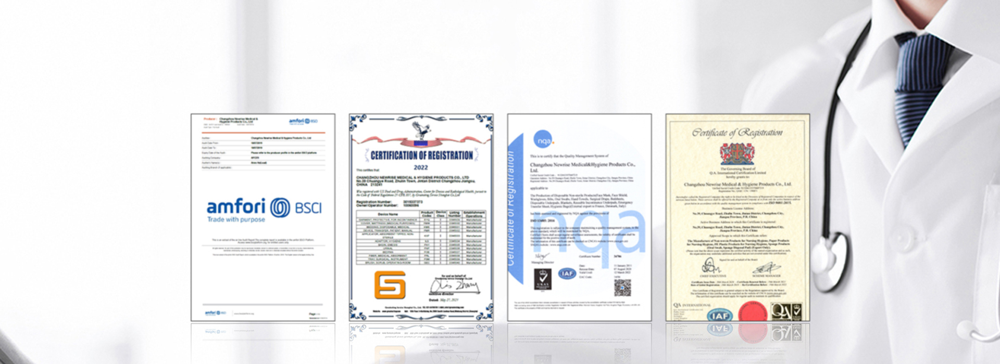

Why OEM/ODM Matters for Medical Supply Distributors
In an increasingly competitive global medical supply market, distributors face a fundamental challenge: how do you differentiate your catalog when you're selling the same commodity products as dozens of other suppliers? The answer lies in private label medical products — building your own branded product line backed by a reliable manufacturer's quality and production capacity.
At Newrise Medical, we've been providing OEM medical supplies and ODM solutions to distributors, healthcare brands, and institutional buyers across 50+ countries for over two decades. Our comprehensive service covers everything from product selection and custom packaging design to quality testing and international logistics — all from our 40,000㎡ ISO 13485-certified facility in Changzhou, China.
"Building a private-label medical supply line isn't just about putting your logo on a product. It's about creating a brand identity that your customers trust, backed by manufacturing quality that delivers consistent results. That's what we help our partners achieve." — Rachel, Sales Manager, Newrise Medical
OEM vs. ODM: Understanding the Difference
Before diving into the specifics, it's important to understand the distinction between these two service models:
| Feature | OEM (Original Equipment Manufacturing) | ODM (Original Design Manufacturing) |
|---|---|---|
| Product design | Customer provides specifications | Manufacturer designs based on requirements |
| Customization level | Your specs, our production | Full design + production service |
| Packaging | Custom branded packaging | Custom branded packaging |
| Best for | Distributors with clear product specs | Brands wanting turnkey product development |
| Time to market | 4–8 weeks (existing product modifications) | 8–16 weeks (new product development) |
Newrise Medical offers both models, and many of our partners use a combination: OEM for established product lines where they have clear specifications, and ODM for new categories where they want our R&D expertise to develop the right product for their market.
What We Customize
Product Specifications
We can modify existing products or develop new ones based on your requirements:
- Materials: Choose from non-woven, spunlace, airlaid, SMS, PE, TPU, and more based on your market's needs and price points
- Sizes: Custom dimensions for underpads, gowns, aprons, and other products to fit local standards
- Performance levels: Adjust absorbency, fluid resistance, filtration efficiency, and other specifications
- Colors: Product color options for visual differentiation and facility color-coding systems
Custom Medical Packaging
Custom medical packaging is often the most visible form of OEM customization — and one of the most impactful for brand building. Our packaging services include:
- Branded outer packaging: Your logo, colors, and design on product bags, boxes, and cartons
- Multi-language labeling: Compliant labeling in English, Spanish, French, German, Arabic, and other languages
- Regulatory-compliant labeling: CE marks, FDA registration numbers, batch codes, expiration dates, and usage instructions
- Pack sizes: From single-unit retail packs to bulk hospital packaging (10–100 pieces per bag)
- Inner packaging: Individual wraps, peel-open pouches, or bulk bags depending on your distribution model
Our in-house design team can work from your existing artwork or create new packaging designs based on your brand guidelines. We ensure all packaging meets the regulatory requirements of your target markets before production begins.
Flexible MOQ
We understand that not every distributor has the same volume requirements. Our flexible MOQ policy means:
- Standard products: Low MOQ for existing product lines — suitable for market testing and smaller distributors
- Custom packaging: Moderate MOQ that scales with your brand's needs
- Full OEM/ODM: Production quantities aligned with your market demand, with the ability to scale up as your business grows
Our OEM/ODM Process: From Inquiry to Delivery
Here's how a typical OEM partnership unfolds at Newrise Medical:
Inquiry & Consultation
Share your requirements — product categories, target market, quality standards, and estimated volumes. Our team will recommend the best product-match and provide initial pricing.
Sample Development
We produce samples based on your specifications for quality evaluation. This includes product samples, packaging mockups, and lab testing reports.
Design & Artwork Approval
Finalize packaging design, labeling, and branding. Our team ensures all regulatory requirements are met for your target markets.
Production
Full-scale manufacturing in our ISO 13485-certified facility with quality checkpoints at every stage. Typical lead time: 20–35 days depending on order complexity.
Quality Inspection & Testing
Every batch undergoes rigorous quality testing before shipment. We provide full documentation including quality certificates, test reports, and compliance statements.
Shipping & Logistics
We arrange international shipping via sea or air freight, with full export documentation. Our logistics team handles customs clearance paperwork and delivery to your warehouse.
Case Study: European Distributor Partnership
A mid-sized European medical supply distributor approached Newrise Medical in early 2024 with a clear goal: build a private-label incontinence care line to differentiate from competitors selling generic Chinese products.
The Challenge: The distributor had strong relationships with nursing homes and home care agencies across three countries but lacked a branded product line. Existing suppliers only offered standard products with no customization.
Our Solution:
- Custom-sized adult diapers and underpads optimized for European bed dimensions
- Branded packaging with multilingual labeling (English, German, French)
- CE-compliant documentation for all products
- A phased launch plan starting with core products, expanding to the full range
The Result: Within 6 months of launch, the distributor reported a 35% increase in margin compared to their previous generic products, along with significantly improved customer loyalty. The private-label line now accounts for over 40% of their incontinence care revenue.
💡 Why Choose Newrise Medical for OEM/ODM?
- 20+ years of manufacturing experience — deep expertise in disposable medical products
- ISO 13485, CE, FDA certified — full regulatory compliance for global markets
- One-stop service — from raw materials to finished products and logistics
- Flexible MOQ — scalable production that grows with your business
- In-house design team — packaging design and regulatory labeling support
- 50+ export countries — proven experience with diverse regulatory environments
Ready to Build Your Brand?
Whether you're a distributor looking to launch a private-label line, a healthcare brand seeking a reliable manufacturing partner, or an institution wanting custom-spec products, Newrise Medical has the capabilities, certifications, and experience to deliver.
Contact our OEM team to discuss your requirements, request samples, or schedule a factory visit. We respond to all inquiries within 24 hours.
- Email: info@cznewrise.com
- Phone: +86 519 86580890
- Contact: Rachel, Sales Manager